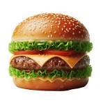

Burger Recipe
This is a delicious burger recipe that you can make at home.
A burger is a sandwich featuring a grilled or pan-fried patty of ground meat (usually beef) nestled inside a sliced bun.
It is often customized with melted cheese, fresh vegetables like lettuce and tomato, and condiments such as ketchup, mustard, and mayonnaise for added flavor and texture.
A typical burger consists of several distinct layers, which can be adapted to personal taste:
Home

Ingredients
- 1 pound ground beef
- 4 hamburger buns
- 4 slices of cheese (optional)
- Lettuce leaves
- Tomato slices
- Onion slices
- Pickles
- Ketchup, mustard, and mayonnaise
Steps
- Preheat your grill or stovetop pan to medium-high heat.
- Divide the ground beef into 4 equal portions and shape them into patties.
- Season the patties with salt and pepper on both sides.
- Place the patties on the grill or pan and cook for about 4-5 minutes per side for medium doneness, or until they reach your desired level of doneness.
- If using cheese, place a slice on each patty during the last minute of cooking to allow it to melt.
- Toast the hamburger buns on the grill or in a toaster until lightly browned.
- Assemble the burgers by placing the cooked patties on the bottom halves of the buns, then adding lettuce, tomato slices, onion slices, pickles, and your preferred condiments. Top with the other half of the bun.
- Serve the burgers hot and enjoy!